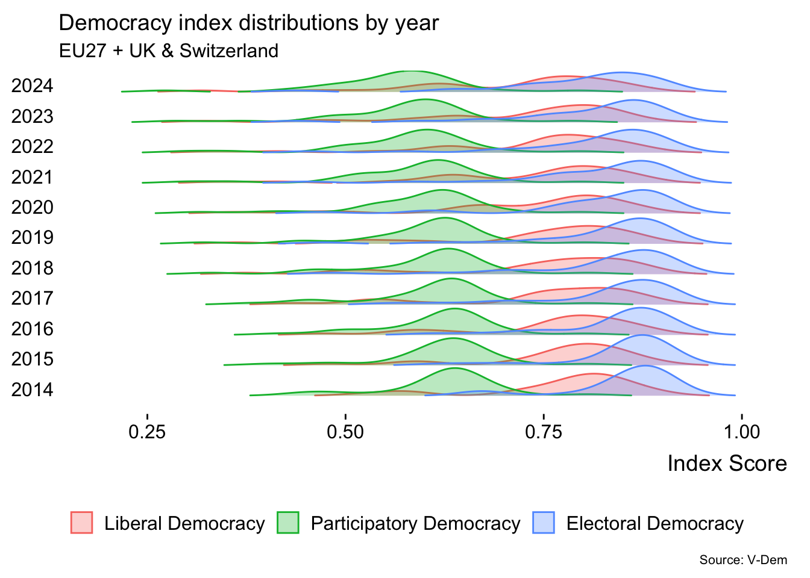
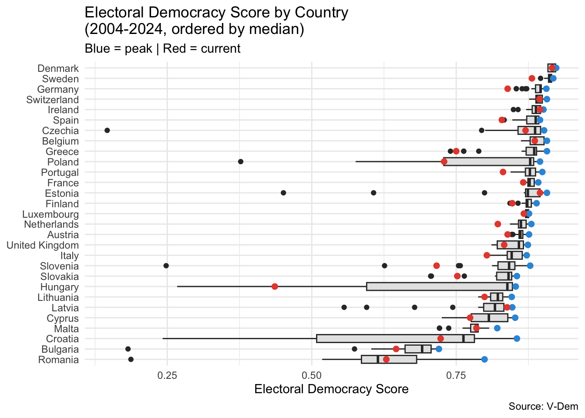
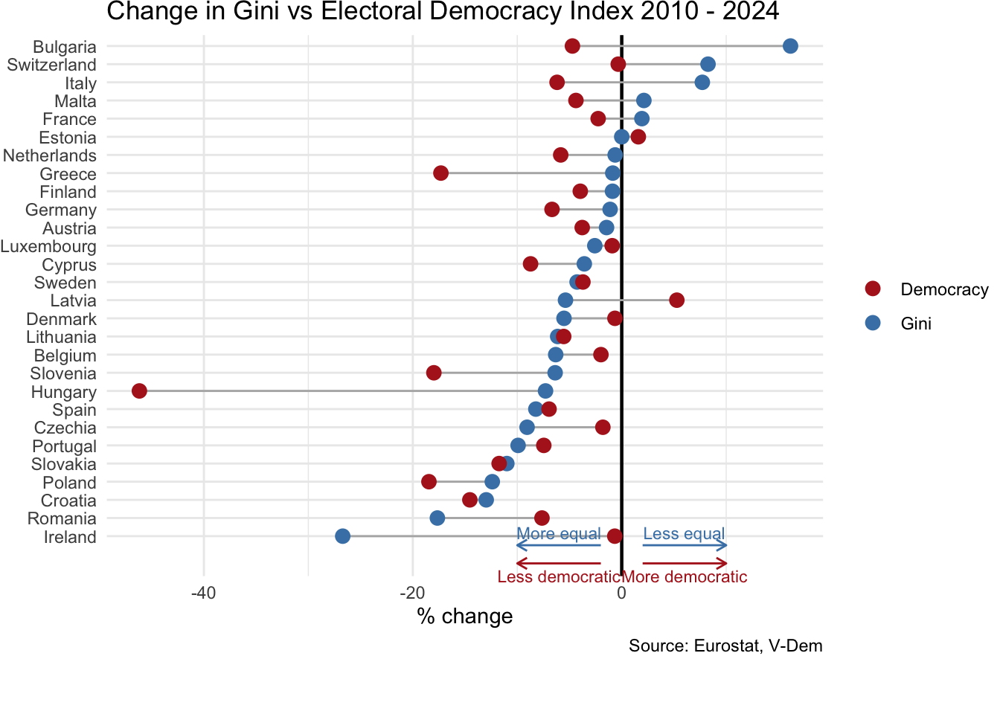

Is democracy retreating across Europe? The ridgeline plot of the three top v-dem indexes by number of sub-components shows that over the last ten years all three distributions have flattened and drifted to the left. This suggests a higher variance and an increasing occurrence of lower scores.
Code
library(ggplot2)library(dplyr)library(tidyr)library(vdemdata)library(ggridges)library(forcats)# get v-dem data, define country listdf <- vdemdata::vdemEU27_List_UK_CH <-c("Austria","Belgium","Bulgaria","Croatia","Cyprus","Czechia","Denmark","Estonia","Finland", "France","Germany","Greece","Hungary","Italy", "Ireland", "Latvia", "Lithuania","Luxembourg","Malta","Netherlands", "Poland", "Portugal", "Romania","Slovenia", "Slovakia","Spain","Sweden","Switzerland", "United Kingdom")EU_Dem <- df |>filter(country_name %in% EU27_List_UK_CH, year >=1989)|>select(country_name, year, v2x_polyarchy, v2x_libdem, v2x_partipdem, v2x_delibdem, v2x_egaldem)# pivot long (for later)EU_Dem_long <- EU_Dem |>pivot_longer(cols =c(v2x_polyarchy, v2x_libdem, v2x_partipdem, v2x_delibdem, v2x_egaldem),names_to ="index_type",values_to ="score")EU_Dem_long <- EU_Dem_long |>mutate(index_type =recode(index_type,"v2x_polyarchy"="Electoral Democracy","v2x_libdem"="Liberal Democracy","v2x_partipdem"="Participatory Democracy","v2x_delibdem"="Deliberative Democracy","v2x_egaldem"="Egalitarian Democracy" ))#Select indicators and yearsSELECTED_INDICATORS <-c("v2x_polyarchy", "v2x_libdem", "v2x_partipdem")SELECTED_YEARS <-c(2014, 2015, 2016, 2017, 2018, 2019, 2020, 2021, 2022, 2023, 2024)#Filter the EU data for the selected yearsEU_Dem_Filtered <- EU_Dem |>filter(year %in% SELECTED_YEARS)#Pivot long for ridgelineEU_Dem_Super_Long <- EU_Dem_Filtered |>pivot_longer(cols =all_of(SELECTED_INDICATORS),names_to ="Index_Name", values_to ="Index_Score" ) |>#Create a combined factor for the Y-axis (e.g., "v2x_polyarchy - 2024")mutate(Y_Axis_Group =factor(paste0(Index_Name, " - ", year),#Order the factor levels for better plotting order (e.g., by year then index)levels =unique(paste0(Index_Name, " - ", sort(year))) ))index_labels <-c("v2x_polyarchy"="Electoral Democracy","v2x_libdem"="Liberal Democracy","v2x_partipdem"="Participatory Democracy")ggplot(EU_Dem_Super_Long, aes(x = Index_Score, y =as.factor(year), fill = Index_Name,color = Index_Name,group =interaction(year, Index_Name) )) +geom_density_ridges(alpha =0.3, scale =1.0,rel_min_height =0.01 ) +scale_fill_discrete(labels = index_labels) +scale_color_discrete(labels = index_labels) +labs(title ="Democracy index distributions by year",subtitle ="EU27 + UK & Switzerland",x ="Index Score",y =NULL, fill =NULL,color =NULL,caption ="Source: V-Dem" ) +theme_ridges(grid =FALSE) +theme(legend.position ="bottom",legend.direction ="horizontal",plot.title =element_text(face ="plain"),plot.caption =element_text(size =8) )

What countries experienced a bigger retreat in democracy? Democracy indices are below the last 20 years peak in all EU27 countries + UK & Switzerland. Half of them exhibit a downward trend.
Hungary and Poland stand out with the biggest declines and widest ranges. Tentatively, three clusters emerge from the boxplots. A first cluster of former communist countries, sitting at the lower end of the scale of median values. These countries experienced more material declines in Index scores and wider historical ranges. A second cluster represented by the Nordics and Switzerland, sitting at the top end of the scale. These countries exhibit much tighter historical ranges. Finally, a third cluster represented by other western European democracies (Poland an outlier here), sitting at the mid-range. Interestingly, a few high/mid median countries experienced material negative swings in recent times: Germany, Sweden, Greece and Portugal are notable examples.
Code
current_values <- EU_Dem |>group_by(country_name) |>filter(year ==max(year)) |>ungroup()peak_values <- EU_Dem |>group_by(country_name) |>filter(v2x_polyarchy ==max(v2x_polyarchy)) |>slice(1) |>ungroup()ggplot(EU_Dem, aes(x =reorder(country_name, v2x_polyarchy, median), y = v2x_polyarchy)) +geom_boxplot(fill ="grey90") +geom_point(data = peak_values,aes(x = country_name, y = v2x_polyarchy),color ="#3498DB", size =2) +geom_point(data = current_values,aes(x = country_name, y = v2x_polyarchy),color ="#E74C3C", size =2) +coord_flip() +theme_minimal() +labs(x =NULL, y ="Electoral Democracy Score",title ="Electoral Democracy Score by Country \n(2004-2024, ordered by median)",subtitle ="Blue = peak | Red = current",caption ="Source: V-Dem")

Age of democracy Democracies emerging from the iron curtain in 1989 seem most vulnerable to backsliding. The mosaic plot illustrating the association between age of democracy and the magnitude of democratic erosion appears to support this. One limitation: the democracy age variable captures the current continuous democratic period (typically starting on 1945-46 or 1989-91), which understates the democratic experience of countries with older parliamentary histories.
Causes: Income inequality Income inequality is often cited as a significant factor contributing to democratic backsliding. For example, in a December 2024 paper(Income inequality and the erosion of democracy in the twenty-first century) Eli G. Rau & Susan Stokes note: “In the 21st century, democracy is more often threatened by elected presidents and prime ministers than by military coup-makers. What are the causes of this rise in democratic erosion? Cross-national statistical analysis points toward one robust finding: The more unequal income distribution is in a democracy, the more at risk it is of electing a power-aggrandizing and norm-shredding head of government.”
Across the EU27 + Switzerland (UK excluded due to missing Eurostat data), Gini coefficients and GDP per capita reveal a clear east-west divide. Western and Nordic countries are wealthier but more unequal; Eastern European countries are poorer but more equal. Notably, it is these more equal countries that have experienced the most democratic backsliding, contradicting the global pattern identified by Stokes & Rau, amongst others.
Code
#install.packages("eurostat")library(eurostat)library(tidyverse)library(rnaturalearth)library(sf)library(tmap)# Get Eurostat data listing#toc <- get_eurostat_toc()# 1. Setup: country list and codesEU27_UK_CH <-c("Austria", "Belgium", "Bulgaria", "Croatia", "Cyprus", "Czechia", "Denmark", "Estonia", "Finland", "France", "Germany", "Greece", "Hungary", "Italy", "Ireland", "Latvia", "Lithuania", "Luxembourg", "Malta", "Netherlands", "Poland", "Portugal", "Romania", "Slovenia", "Slovakia", "Spain", "Sweden", "Switzerland", "United Kingdom")geo_codes <-get_eurostat_dic("geo") |>filter(full_name %in% EU27_UK_CH, nchar(code_name) ==2)eu_codes <- geo_codes$code_name# 2. Get Eurostat data (Gini and GDP per capita)gini_raw <-get_eurostat("ilc_di12c", time_format ="num",filters =list(geo = eu_codes, time =2004:2024))gdp_raw <-get_eurostat("sdg_08_10",time_format ="num",filters =list(geo = eu_codes, time =2004:2024, unit ="CLV20_EUR_HAB"))# 3. Get V-Dem polyarchypolyarchy <- df |>filter(country_name %in% EU27_UK_CH, year >=2004) |>select(country_name, year, v2x_polyarchy)# 4. Build main analysis dataframeinequal <- gini_raw |>left_join(geo_codes, by =c("geo"="code_name")) |>rename(country_name = full_name, year = time, gini = values) |>left_join(polyarchy, by =c("country_name", "year")) |>left_join(gdp_raw |>select(geo, time, gdp = values), by =c("geo", "year"="time")) |>group_by(country_name) |>arrange(year) |>mutate(peak_polyarchy =cummax(lag(v2x_polyarchy, default =first(v2x_polyarchy))),pct_change_from_peak = (v2x_polyarchy - peak_polyarchy) / peak_polyarchy *100,erosion =ifelse(pct_change_from_peak <=-30, 1, 0) ) |>ungroup()# 5. Map data (latest year per country)europe <-ne_countries(scale ="medium", continent ="Europe", returnclass ="sf")europe_data <- inequal |>group_by(country_name) |>filter(year ==max(year)) |>slice(1) |>ungroup() |>select(country_name, gini, gdp) |>right_join(europe, by =c("country_name"="name")) |>st_as_sf()# Set to plot modetmap_mode("plot")# Gini mapp1 <-tm_shape(europe_data, bbox =c(-10, 35, 40, 70)) +tm_polygons(fill ="gini", fill.scale =tm_scale_continuous(values ="oranges"),fill.legend =tm_legend(title ="Gini coefficient (higher = more unequal)", na.show =FALSE,orientation ="landscape",width =25,frame =FALSE )) +tm_title("Income inequality 2024") # GDP mapp2 <-tm_shape(europe_data, bbox =c(-10, 35, 40, 70)) +tm_polygons(fill ="gdp", fill.scale =tm_scale_continuous(values ="oranges",label.format =list(fun =function(x) paste0(round(x/1000)))),fill.legend =tm_legend(title ="€ '000", na.show =FALSE,orientation ="landscape",width =25,frame =FALSE), ) +tm_title("Real GDP/capita 2024")# Side by sidetmap_arrange(p1, p2)grid.text("Source: Eurostat", x =0.95, y =0.03, just ="right",gp =gpar(fontsize =9))
Adding the dimension of time to the analysis does not change the picture in a meaningful way. Between 2010 - 2014 (dropping the interval 2004 - 2014 due to missing data from Eurostat) most countries evolved into more equal societies; however, this does not appear to have driven a systematic improvement in democratic health.
Code
# Calculate % change for both metrics from inequalcleveland_data <- inequal |>filter(year %in%c(2010, 2024), country_name !="United Kingdom") |>group_by(country_name) |>summarise(gini_change = (gini[year ==2024] - gini[year ==2010]) / gini[year ==2010] *100,polyarchy_change = (v2x_polyarchy[year ==2024] - v2x_polyarchy[year ==2010]) / v2x_polyarchy[year ==2010] *100 ) |>drop_na()# Pivot for plottingcleveland_long <- cleveland_data |>pivot_longer(cols =c(gini_change, polyarchy_change),names_to ="metric",values_to ="pct_change") |>mutate(metric =ifelse(metric =="gini_change", "Gini", "Democracy"))# Cleveland dot plotggplot(cleveland_long, aes(x = pct_change, y =reorder(country_name, pct_change * (metric =="Gini")), colour = metric)) +geom_vline(xintercept =0, linewidth =0.8, colour ="black") +geom_line(aes(group = country_name), colour ="grey70") +geom_point(size =3) +scale_colour_manual(values =c("Gini"="steelblue", "Democracy"="firebrick")) +labs(x ="% change", y =NULL, colour =NULL,title ="Change in Gini vs Electoral Democracy Index 2010 - 2024",caption ="Source: Eurostat, V-Dem") +theme_minimal() +theme(plot.title =element_text(size =14) ) +# Blue arrows for Giniannotate("segment", x =-2, xend =-10, y =0.5, yend =0.5, arrow =arrow(length =unit(0.2, "cm")), colour ="steelblue") +annotate("text", x =-6, y =1.2, label ="More equal", colour ="steelblue", size =3) +annotate("segment", x =2, xend =10, y =0.5, yend =0.5, arrow =arrow(length =unit(0.2, "cm")), colour ="steelblue") +annotate("text", x =6, y =1.2, label ="Less equal", colour ="steelblue", size =3) +# Red arrows for Democracyannotate("segment", x =-2, xend =-10, y =-0.5, yend =-0.5, arrow =arrow(length =unit(0.2, "cm")), colour ="firebrick") +annotate("text", x =-6, y =-1.2, label ="Less democratic", colour ="firebrick", size =3) +annotate("segment", x =2, xend =10, y =-0.5, yend =-0.5, arrow =arrow(length =unit(0.2, "cm")), colour ="firebrick") +annotate("text", x =6, y =-1.2, label ="More democratic", colour ="firebrick", size =3) +theme_minimal() +coord_cartesian(clip ="off") +theme(plot.margin =margin(b =30))

Causes: culture wars and disinformation Polarization has been frequently linked to democratic erosion. The heatmap reveals a clear pattern: countries ranking lowest on the Electoral Democracy Index (Hungary, Poland, Greece, Slovenia, Slovakia) show intensifying polarization across three different dimensions. These capture distinct but related phenomena: whether society is divided into antagonistic political camps (political polarization), whether major parties deploy hate speech in their rhetoric (political parties hate speech), and the extent to which differences of opinion result in major clashes of views (polarization of society). The visual evidence suggests that democratic backsliding and rising polarization tend to move together.
Causes: Sociocultural threats Perceived socio-cultural threats - such as expanded equality across social groups and distrust towards pluralistic expression - have been proposed as drivers of democratic backsliding. The biplot maps six V-Dem indicators capturing both dimensions: educational equality, health equality, justice access, and power by gender on one hand; media perspectives and academic/cultural freedom on the other. PC1 (57.4% of variance) separates countries by overall performance: Hungary, Romania, and Bulgaria cluster on the far right, scoring weakly across all indicators. PC2 (13.6%) distinguishes between equality-focused democracies (upper left: Germany, Slovenia, Switzerland scoring higher on education, health, justice) and freedom of expression-focused ones (lower left: Czechia, Ireland, France scoring higher on media perspectives and academic freedom). The backsliding democracies cluster away from all vectors, suggesting erosion occurs across both dimensions simultaneously rather than selectively.
Mechanism In her paper “On Democratic Backsliding” Bermeo identifies two mechanisms of democratic erosion: executive aggrandizement and election manipulation. As Bermeo puts it: “Executive aggrandizement […] occurs when elected executives weaken checks on executive power one by one, undertaking a series of institutional changes that hamper the power of opposition forces to challenge executive preferences.” Whilst the definition of this phenomenon is complex and how best to measure it remains debated among scholars, this plot offers an exploratory look at five V-Dem indicators that align with Bermeo’s definition, each based on expert assessments: whether elections are free and fair, whether the executive respects the constitution, how often the government complies with court decisions it disagrees with, whether journalists are harassed by the government, and whether opposition parties can exercise oversight against the governing coalition’s wishes. Countries are ordered by their overall electoral democracy score. As expected, countries with lower democracy scores rank worse in every metric. Notably, election fairness and journalist harassment show the clearest gradient. The other indicators exhibit a more mixed picture.
Code
library(tidyverse)EU_aggrand_df <- df |>filter(country_name %in% EU27_List_UK_CH, year ==2024) |>select( country_name, year,"Electoral democracy score"= v2x_polyarchy,"Elections Free/Fair"= v2elfrfair,"Executive Respects Constitution"= v2exrescon,"Judicial Compliance"= v2jucomp,"Harassment of journalists"= v2meharjrn,"Legislative opposition party"= v2lgoppart )# Create long formatEU_aggrand_long <- EU_aggrand_df |>pivot_longer(cols =-c(country_name, year),names_to ="indicator",values_to ="value" )# Calculate deviation from median using z-scoresEU_diverging <- EU_aggrand_long |>group_by(indicator) |>mutate(deviation = (value -mean(value, na.rm =TRUE)) /sd(value, na.rm =TRUE) ) |>ungroup()# Create country order based on polyarchy scorecountry_order <- EU_aggrand_df |>arrange(`Electoral democracy score`) |>pull(country_name)EU_diverging <- EU_diverging |>mutate(country_name =factor(country_name, levels = country_order))# Set indicator order with polyarchy firstEU_diverging <- EU_diverging |>mutate(indicator =factor(indicator, levels =c("Electoral democracy score","Elections Free/Fair","Executive Respects Constitution","Judicial Compliance","Harassment of journalists","Legislative opposition party" )))# Plotggplot(EU_diverging, aes(x = deviation, y = country_name, fill = deviation >0)) +geom_col() +facet_wrap(~indicator) +scale_fill_manual(values =c("firebrick", "steelblue"), labels =c("Below EU mean", "Above EU mean")) +geom_vline(xintercept =0, linewidth =0.3) +theme_minimal() +theme(plot.title =element_text(size =10),axis.text.y =element_text(size =5),legend.position ="bottom",legend.direction ="horizontal",plot.caption =element_text(hjust =0, size =8) ) +labs(x ="Deviation from mean", y =NULL, fill =NULL,title ="Executive Aggrandizement Indicators in the EU 27 + UK and Switzerland (2024)",caption ="Source: V-Dem" ) +theme(plot.caption =element_text(hjust =1),plot.title =element_text(size =12))